NLP
Note:Link to the source code - 1
Note:Link to the source code - 2
Note:Link to the source code - 3
Note:Link to the source code - 4
Note:Link to the source code - external dataset
NLP 1
Initially, we employ regular expressions to identify posts containing "iphone14" and its variants, related features, and abbreviations. Then, the data undergoes preprocessing, which includes removing irrelevant characters, standardizing text formats, eliminating punctuation and excess spaces, and merging the titles and content of the posts to form a coherent and clear text input. Subsequently, using Spark NLP and the T5 model, we conduct extensive analysis and question generation on this preprocessed text. The generated questions reflect community members’ key inquiries and primary concerns about iPhone 14.
The questions generated by the T5 model trained using large amounts of data represent the most concerning aspects of the iPhone for the majority of posting users. These generated questions will serve as automatic prompts, which can help users clarify their questioning ideas and increase their interest in asking questions, thereby improving user experience, further enhancing the activity of the Reddit community, and improving the overall interaction quality and satisfaction within the community.
| result |
|---|
| What is the name of the phone I bought? |
| What is the name of the iPhone 14 model? |
| What is the new iPhone 14 Pro? |
| What is the bug fix for iOS 1601? |
| What is the battery life of the iPhone 14 Pro? |
| What is the iPhone 14 Pro Max? |
| What is the name of the reviewers who have watched several reviews? |
| What is the noise cancellation on the iPhone 14 vs the 13? |
| What is the Speck clear case? |
| What is the best way to transfer contacts, pictures, etc. to the new phone? |
| What was the name of the Mini Pro that I was curious about? |
| What is the delivery date for my iPhone 14 Pro Max? |
| What is the bug fixes for iOS 1601? |
| What date was pushed back from next Tuesday to Friday? |
| Where can I buy a new iPhone 13 Pro Max that is unlocked? |
| What is the benefit of using iPhone 14 with eSIM while traveling? |
| What color did all of the three iPhone models have? |
| What is the current size of my phone? |
| What is there to expect that I haven't with my old phone? |
| Which leaks were the least accurate? |
| What leaks were the least accurate? |
| What is the overall color of the picture on the iPhone 14 Pro? |
From this we can analyze the issues that users are concerned about mainly divided into the following parts: Features and performance of various iPhone 14 models; System updates and possible technical issues; User experience; Comparison with other models; Availability and supply chain issues; Market Feedback and Product Reviews Comments; Design and appearance. These aspects of attention reflect users’ focus on iPhone 14. These insights can be used to guide content creation, product development, go-to-market strategy, and provide more personalized user support. In this way, Reddit is not only able to provide post suggestions to enhance the user experience, but also provide valuable market insights.
NLP 2
Drawing insights from the content of posts within the "iPhone" subreddit, our approach involved the implementation of a sophisticated topic model. This model served as a powerful tool to identify and encapsulate the prevailing themes that captivate the interest of the community within this specific domain. As we delved into the iPhone-related subreddit, our primary goal was to uncover the fundamental aspects that strike a chord with the community members. The utilization of a topic model not only allowed us to achieve this objective but also brought forth a wealth of noteworthy observations.
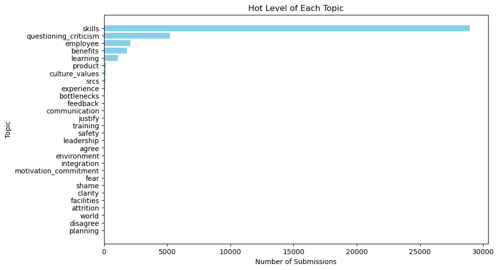At the forefront, the discourse within the community predominantly revolves around key subjects such as "skills," "questioning_criticism," "employee," "benefits," and "learning." The prominence of "questioning_criticism" and "skills" as dominant topics is indicative of a profound enthusiasm within the community to acquire knowledge and actively participate in discussions concerning various Apple products. These focal points underscore the community's fervor for staying well-informed and engaging in dialogues centered around Apple's diverse product offerings.
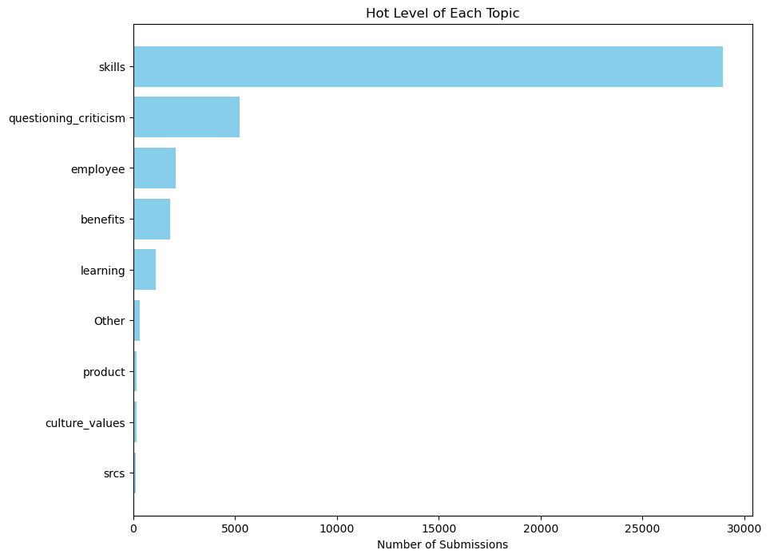Moreover, discussions pertaining to "employee" and "benefits" suggest a heightened interest in matters related to Apple as an employer. These discussions may unveil a collective curiosity regarding the experiences of Apple employees and the intrigue generated by the company's diverse product portfolio. In essence, our analysis reveals a multifaceted landscape within the iPhone-related subreddit, where the community's passion extends beyond product-centric discussions to encompass broader themes of professional engagement and corporate interest.
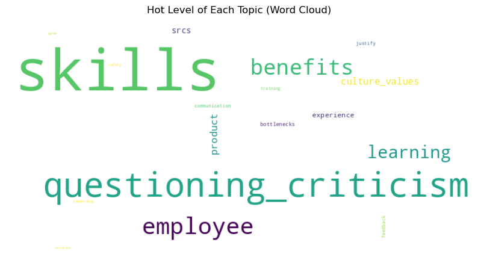NLP 3
Based on the sentiment model, I detected the sentiment of all comments in the iPhone subreddit from 2022 to 2023. I found and excluded some errors, as well as some deleted comments. The probabilities of positive and negative sentiment appearing are evenly split. The assessments of Apple's products exhibit a balanced and reasoned approach, avoiding exclusively positive or negative sentiments.
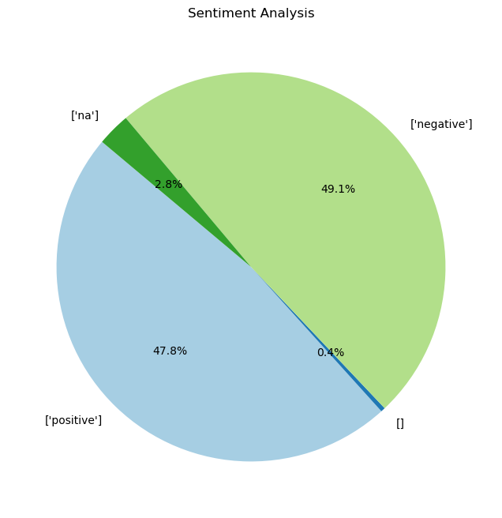NLP 4
Based on the results of NLP_3, we conducted the NLP_4 task with the primary aim of identifying instances of sarcasm and irony in user comments within the "iPhone" subreddit. NLP_3 primarily explored the sentiment analysis results of comments in the iPhone subreddit dataset from 2022-2023. According to our findings, positive sentiment accounts for 47.8%, negative sentiment for 49.1%, and the rest could not be analyzed.
In NLP_4, we employed three methods to comprehensively identify the proportion of comments classified as sarcasm. In the first method, since we tend to believe that sarcasm belongs to negative sentiment, we first filtered out the results of NLP_3 negative sentiment, and then called the Emotion Model to get different emotions. The model provides only four categories: joy, fear, surprise, and sadness. If solely relying on the first method, we inferred that within negative sentiment, emotions classified as joy or surprise are most likely sarcasm. However, recognizing the limitations and potential inaccuracies of this conclusion, we decided to utilize methods two and three to further enhance our analysis.
| negative_emotion | count | |
|---|---|---|
| 0 | joy | 34429 |
| 1 | fear | 43439 |
| 2 | surprise | 50076 |
| 3 | sadness | 175822 |
Methods two and three involve utilizing a Sarcasm Classifier (another type of model), which provides only two outcomes: normal and sarcasm. Additionally, since we tend to believe that sarcasm falls under negative sentiment (though this is only our speculation), in method two, we filtered the results of NLP_3 positive sentiment comments. We then invoked the Sarcasm Model to obtain normal or sarcasm results. As for our method three, it involves, once again, filtering the results of NLP_3 negative sentiment. Subsequently, we invoked the Sarcasm Model to obtain normal or sarcasm results. The following are the results of method two and three:
| sarcasm_emotion | count | image | |
|---|---|---|---|
| Method 2 | normal | 252723 | |
| sarcasm | 43183 | ||
| Method 3 | normal | 259313 | 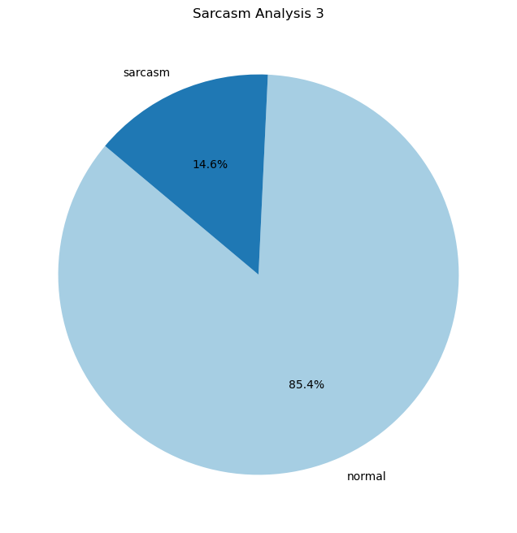 |
| sarcasm | 44453 |
However, based on the results of methods two and three, which involve examining positive and negative comments and categorizing them as normal or sarcasm, we observed that sarcasm accounts for 14.6% in both subsets. We speculate that this could be due to several reasons, possibly stemming from the internal settings of the Sarcasm Model we used. However, as we only invoked pretrained models, we cannot confirm whether this is the case. Another possibility is that our two subsets happen to exhibit this distribution by chance.
Based on the final output results (CSV file) from the three methods described above, as the subset for method two comes from positive sentiment comments, while those for methods one and three come from negative sentiment comments, we focused on examining the first approximately seven hundred rows of the files for methods one and three. We observed the following conclusions:
Through comparing the actual comments (body) classified by the Emotion Model as joy (method one) and the Sarcasm Model as sarcasm (method three, both being negative sentiment subsets), the overlap between the two is not very high, but there is an overlap of approximately one to four comments per hundred. When comparing the actual comments (body) classified by the Emotion Model as fear (method one) and the Sarcasm Model as sarcasm (method three, both being negative sentiment subsets), the overlap between the two is very low, much lower than the overlap observed in the joy classification within negative sentiment. Similarly, when comparing the actual comments (body) classified by the Emotion Model as surprise (method one) and the Sarcasm Model as sarcasm (method three, both being negative sentiment subsets), the overlap between the two is not very high, lower than the overlap in joy classification but higher than the overlap in fear classification. Based on the above observations, the results are somewhat consistent with our initial speculation. Initially, we speculated that within negative sentiment comments, emotions classified as joy or surprise are most likely sarcasm. However, by comparing the actual comments (body) classified as sadness by the Emotion Model (method one) and as sarcasm by the Sarcasm Model (method three, both being negative sentiment subsets), the overlap between the two is very high. It is the highest overlap among the four emotions and the sarcasm classification. From the results of these four analyses, we conclude that within negative sentiment comments, emotions classified as sadness are most likely to be sarcasm. However, we also took into consideration that within the negative sentiment subset, sadness classification accounts for 57.9%, while sarcasm classification is only 14.6%. The high overlap is highly probable and evident. Therefore, in the end, we infer that within negative sentiment comments, emotions classified as joy or sadness are most likely to be sarcasm.
Finally, we also manually examined the file (body part) from method two. We observed that within the subset classified as positive sentiment, comments classified as sarcasm by the Sarcasm Model also had a significant probability of being classified as sarcasm by human judgment. This outcome leads us to infer that, initially, our tendency to believe that sarcasm belongs to negative sentiment was relatively arbitrary. This assumption was a consensus reached within our group for classifying human sarcasm emotions. In reality, how others determine whether sarcasm belongs to positive or negative sentiment is unknown to us. Based on the results obtained from the model, sarcasm comments could be present in both positive and negative sentiment. Considering that we invoked pretrained models and lack insight into the classification logic behind the models, we cannot conclusively assert that sarcasm is exclusively associated with negative sentiment. The above is our utilization of three methods and two models to further analyze possible outcomes of sarcasm comments within the iPhone subreddit comment dataset. Understanding these sarcastic comments can enhance the comprehension of nuanced communication on Reddit.
External: Stock Data
Due to our subreddit dataset revolving around various analyses related to the keyword “iPhone” (EDA, NLP, and ML tasks), we developed curiosity about Apple Inc., prompting a desire for further analysis of the company. Therefore, in terms of external sources, we aim to explore whether the release of new iPhone products by Apple Inc. in recent years has had an impact on the company's stock price and whether the discussion intensity on Reddit significantly increases during these product launches. Naturally, we acknowledge that the unveiling of new products in September each year encompasses not only new iPhone models but also other items (such as Mac, iPad, Apple Watch, Apple Studio, etc.), all of which can influence Apple's stock price. Furthermore, it is essential to note that factors beyond new product releases can impact stock prices. However, considering the data at our disposal and the fact that iPhones contribute approximately 52% to Apple's Net Sales from 2021 to 2023 (source: Apple's 2023 Form 10-K), making them the most influential among all Apple products, we chose to focus on iPhones as representatives.
Below, we will sequentially introduce how we fetched Apple stock prices, cleaned the data, and finally analyzed the connection between Apple stock prices and our iPhone subreddit dataset.
We wrote code to call Yahoo Finance API and then scrape historical data of stock prices of Apple Inc. from Yahoo Finance. Yahoo Finance offers “Yahoo Finance API” which is a RESTful API that provides access to financial data. The data includes stock quotes, historical prices, and company information. We chose this API since the API is free to use and does not require an API key. In our code, we first sent a http request to Yahoo Finance. Initially, we failed to get data, since the API prefers to be used by websites rather than individual access. To solve this issue, we added a variable called “headers”. We used this “headers” variable in the “Get” request to pretend that we are a website (not individual). After sending the http request, if the http response status is “404”, the script will print information to the terminal to notify that this symbol does not exist in Yahoo Finance (the stock might be delisted). If the http response status is “200”, then we will know that this request is successful. We also implemented a "SLEEP_TIME" to ensure that our requests wouldn't overload the server. These implementations allowed us to successfully retrieve the information that we wanted.
In our external source (dataset), there are 7 attributes.
| Title | Name | Meaning |
|---|---|---|
| Date | trading day | The specific day on which trading activities occur. |
| Open | a stock’s initial price at the start of the trading day | The initial price at which a stock is traded at the beginning of the trading day. |
| High | a stock’s highest trading price for the day | The highest price at which a stock is traded during the entire trading day. |
| Low | a stock’s lowest trading price for the day | The lowest price at which a stock is traded during the entire trading day. |
| Close | the last price at which a security traded during the regular trading day | The final price at which a security is traded when the regular trading day concludes. |
| Adj Close | the closing price after adjustments for all applicable splits and dividend distributions (reflects the impact of cash dividends, stock dividends, or stock splits) | The closing price of a security, adjusted for any splits or dividend distributions, providing a more accurate reflection of value. |
| Volume | the number of a stock’s shares that are traded on a stock exchange in a day | The total number of shares of a stock that are bought and sold on a stock exchange during a single trading day. |
After fetching the external data, we proceeded to clean it. While there are no missing values, we identified some anomalies in the data, specifically during the years 1981-1985. These anomalies included days with zero volume or days where the open, highest, lowest, and close prices remained the same throughout the entire day. Given that our subreddit dataset primarily focuses on the year 2022 (with some entries from 2023), we opted to filter out these anomalies as they pertain to older data not relevant to our analysis. This cleaning process resulted in the removal of 28 rows, reducing the dataset from 10,824 to 10,796 rows. With these cleaning steps completed, the external dataset is now prepared for further analysis, free from noise values that could impact subsequent tasks.
Although we have written code to perform basic statistical analysis on Apple stock prices, due to the nature of our data—comprising stock prices and trading volume—it is not particularly useful to analyze individual stock symbols' mean, mode, median, and standard deviation on their own. This is because these statistics require complementation with a time variable. Even when we divide the time range into stable periods, upward trends, and downturns, calculating various price statistics like mean, mode, median, and standard deviation does not yield highly informative results. Therefore, for basic statistical analysis, we did not conduct further analysis.
Our external source primarily focuses on the analysis of the years 2022, 2019-2023, and 2014-2023 (stock price data for 2023 only extends to November 16, 2023). Finally, we will explore the correlation between Apple stock prices and our iPhone subreddit dataset. The emphasis on analyzing the year 2022 is due to our iPhone subreddit dataset being primarily centered around that year, with only January data available for 2023, lacking a complete year's worth of data. Firstly, based on the timeline of iPhone versions released over the past decade, which we collected from official Apple website:
| Year | iPhone Version & Release Date |
|---|---|
| 2014 | iPhone 6 & 6 Plus - September 9, 2014 |
| 2015 | iPhone 6s & 6s Plus - September 9, 2015 |
| 2016 | iPhone SE - March 31, 2016 iPhone 7 & 7 Plus - September 7, 2016 |
| 2017 | iPhone 8 & 8 Plus - September 12, 2017 |
| 2018 | iPhone XS & XS Max - September 12, 2018 iPhone XR - September 12, 2018 |
| 2019 | iPhone 11 Series - September 10, 2019 |
| 2020 | iPhone SE 2 - April 15, 2020 iPhone 12 Series - October 13, 2020 |
| 2021 | iPhone 13 Series - September 14, 2021 |
| 2022 | iPhone SE 3 - March 8, 2022 iPhone 14 Series - September 7, 2022 |
| 2023 | iPhone 15 Series - September 12, 2023 |
| 2022 | |
|---|---|
| 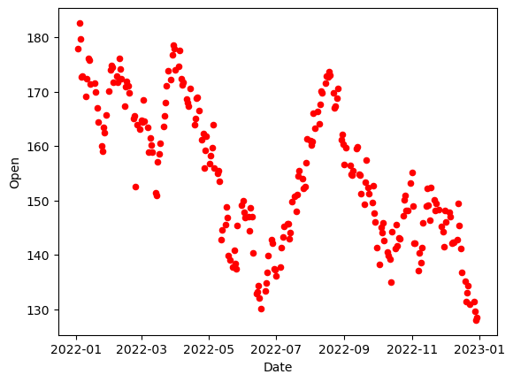 | 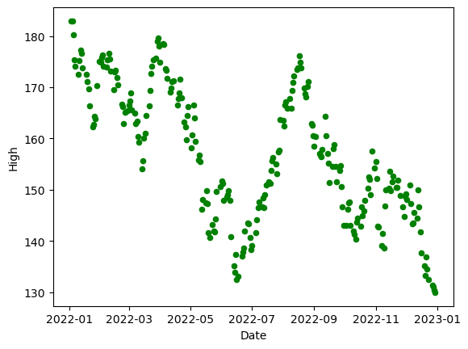 |
| 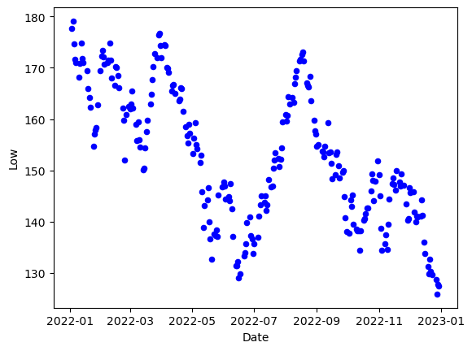 | 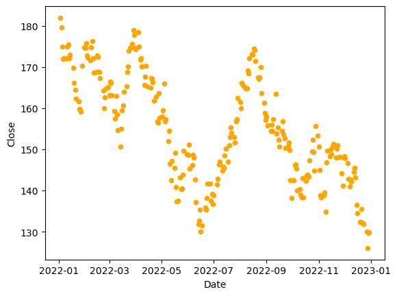 |
| 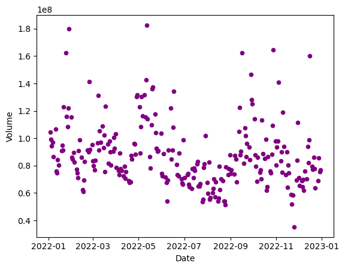 | 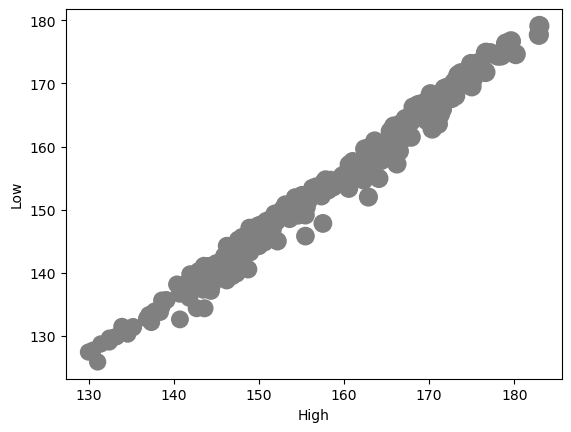 |
| 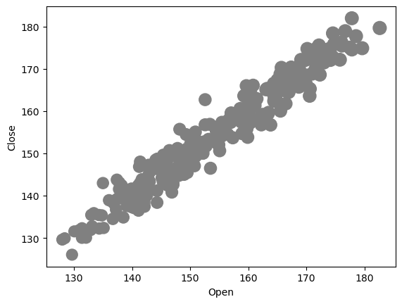 | 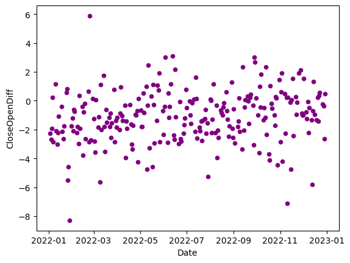 |
| 2019-2022 | |
|---|---|
| 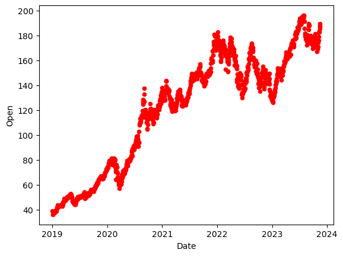 | 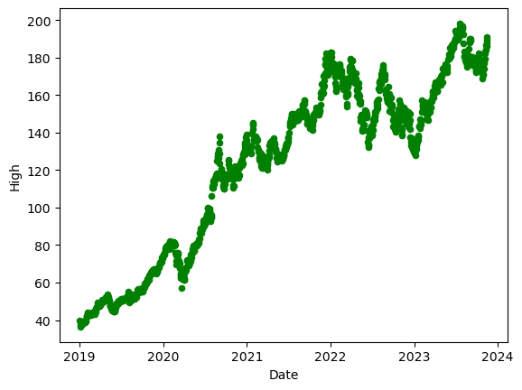 |
| 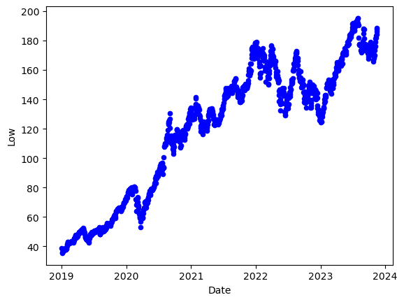 | 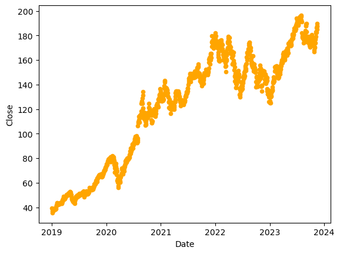 |
| 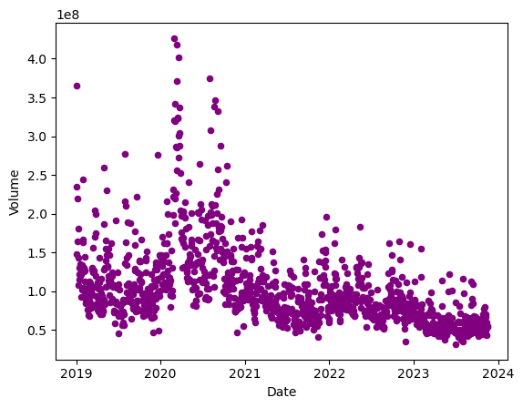 | 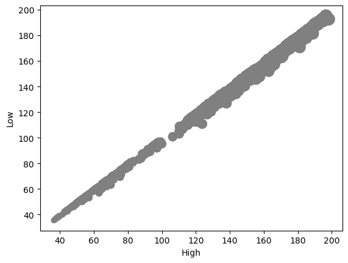 |
| 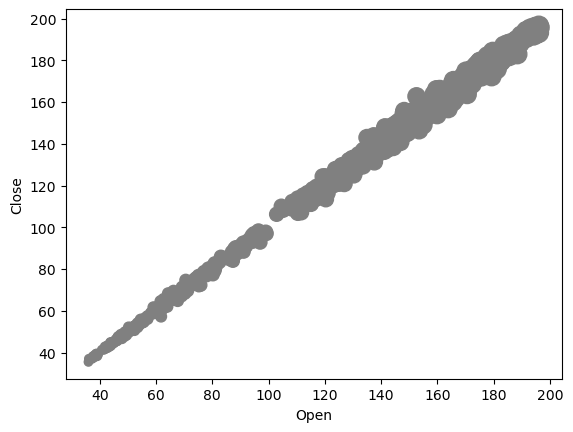 | 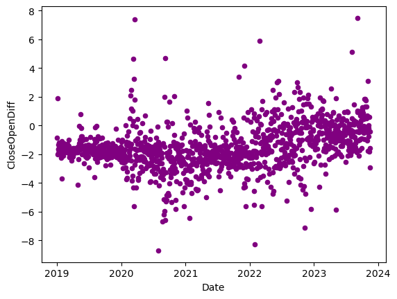 |
| 2014-2022 | |
|---|---|
| 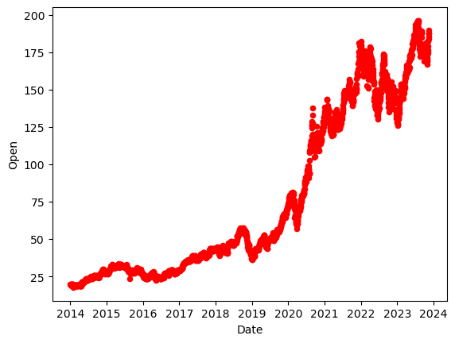 | 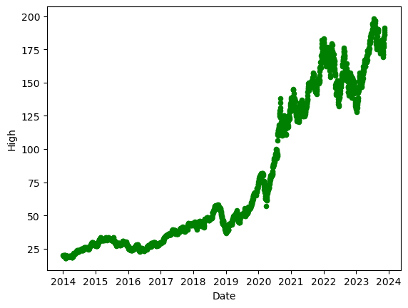 |
| 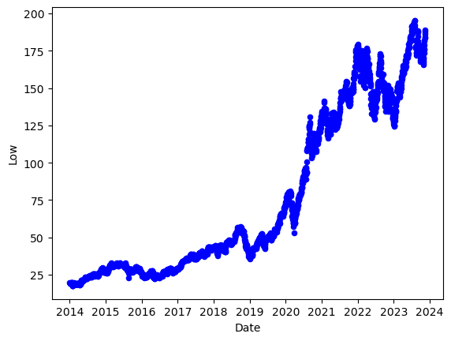 | 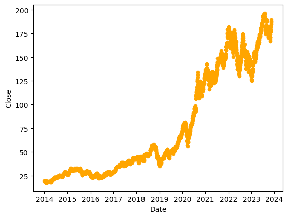 |
| 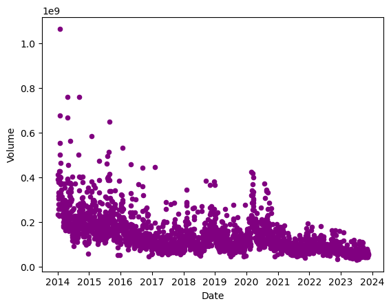 | |
| 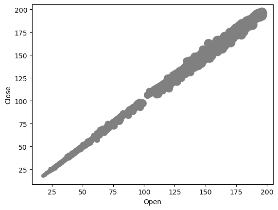 | 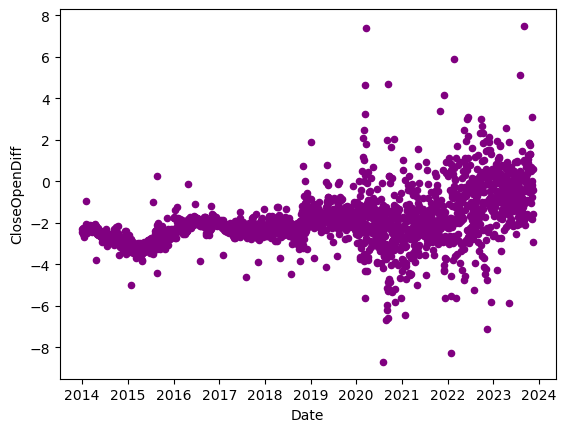 |
According to Apple's scatterplots depicting date and prices (open, high, low, close) in 2022, we observed an overall downward trend in Apple's stock prices, especially during the months of iPhone new version releases (March 2022 and September 2022). However, when considering Apple's performance over the past five or ten years, we find that Apple's stock prices have shown an overall upward trend during the last decade. Although there was a decline in 2022, the stock prices in 2022 remained at a high level within the context of the past decade. From the scatterplots of date and volume, it is evident that from 2014 to 2023, the trading volume reached its peak in 2014, marking the highest point in the group of scatterplots. Overall, the trading volume has shown a declining trend. Additionally, we observed that each year after September (the month when new iPhones are announced), the trading volume seems to decrease. The actual reasons for this trend may require further analysis using alternative methods.
In the CloseOpenDiff-Date scatterplots, the y-axis represents the difference between the previous day's 'Adj Close' and the current day's 'Open.' If this number is negative, it means that the stock price increased at the opening of the day, and if it's positive, it indicates a decrease in the opening stock price. Additionally, the further the scatterplot is from zero, the greater the increase or decrease in price, indicating more significant post-market events that led to such significant deviations. From Apple’s these types of scatterplots, we could see that there were more occurrences of these abnormal events in 2020 to 2023, resulting in larger fluctuations in the deviation values. Over the past few years, the difference between the previous day's closing price and the day's opening price has been increasing since September.
Overall, we can observe that except for Apple’s stock price falling in the iPhone release month (mainly September) in 2015 (iPhone 6s & 6s Plus) and 2022 (iPhone 14 Series), in the rest of the years, after September, the stock price almost all are showing an upward trend. However, it's important to note that stock price fluctuations are typically influenced by various factors, including macroeconomic conditions, industry trends, company financial reports, legal changes, and shifts in competitive landscapes. Therefore, we can only observe that, over the past decade, almost every year after the announcement of a new iPhone version, stock prices tend to rise. This could be attributed to the positive outlook of the investing public towards Apple's prospects, or there is even a possibility that stock prices are influenced by institutional trading (though the core decisions behind these actions are discreet and non-public), and we have no way of knowing. It's important to acknowledge that while there is a correlation, correlation does not imply causation.
The above is our analysis of whether the announcement of new iPhone products by Apple in recent years has an impact on the company's stock prices. Next, we would like to explore whether the discussion intensity on Reddit significantly increases when Apple announces new iPhone products in 2022. Due to the vast amount of Reddit data, our current dataset primarily covers the year 2022. Therefore, this analysis focuses on 2022 and specifically analyzes the Comment dataset (Submission dataset is not included in the analysis). Based on our testing and comparison results, the discussion intensity is currently higher for iPhone models 10 to 15. Therefore, we emphasize the analysis of the number of mentions for these iPhone models in various months, considering it as a measure of discussion intensity.
| month(created_utc) | count |
|---|---|
| 1 | 5 |
| 2 | 1 |
| 3 | 2 |
| 4 | 1 |
| 5 | 4 |
| 7 | 3 |
| 8 | 3 |
| 9 | 3 |
| 11 | 1 |
| 12 | 1 |
| month(created_utc) | count |
|---|---|
| 1 | 47 |
| 2 | 52 |
| 3 | 51 |
| 4 | 62 |
| 5 | 32 |
| 6 | 47 |
| 7 | 49 |
| 8 | 51 |
| 9 | 92 |
| 10 | 45 |
| 11 | 63 |
| 12 | 35 |
| month(created_utc) | count |
|---|---|
| 1 | 53 |
| 2 | 43 |
| 3 | 40 |
| 4 | 53 |
| 5 | 44 |
| 6 | 41 |
| 7 | 34 |
| 8 | 50 |
| 9 | 102 |
| 10 | 44 |
| 11 | 63 |
| 12 | 36 |
| month(created_utc) | count |
|---|---|
| 1 | 86 |
| 2 | 85 |
| 3 | 76 |
| 4 | 97 |
| 5 | 80 |
| 6 | 103 |
| 7 | 86 |
| 8 | 107 |
| 9 | 192 |
| 10 | 85 |
| 11 | 63 |
| 12 | 75 |
| month(created_utc) | count |
|---|---|
| 1 | 10 |
| 2 | 14 |
| 3 | 16 |
| 4 | 21 |
| 5 | 22 |
| 6 | 49 |
| 7 | 69 |
| 8 | 56 |
| 9 | 302 |
| 10 | 125 |
| 11 | 82 |
| 12 | 72 |
| month(created_utc) | count |
|---|---|
| 1 | 1 |
| 2 | 2 |
| 5 | 5 |
| 6 | 8 |
| 7 | 10 |
| 8 | 8 |
| 9 | 42 |
| 10 | 11 |
| 11 | 14 |
| 12 | 9 |
In March 2022, Apple announced the iPhone SE 3, and in September, they announced the iPhone 14 Series. The mention of the iPhone 15 is likely related to Reddit users' comments speculating and making predictions about future iPhone versions. From the number of mentions for the various iPhone models mentioned above, we can observe that in 2022, iPhone 10 had fewer mentions, aligning with our intuition. On the other hand, iPhone 11 to 14 remained popular, still generating significant discussion. Moreover, from the above tables, it is evident that mentions of iPhone 11 to 14 increased noticeably after September 2022, especially for iPhone 12 to 14. Combining the above analysis of Apple's stock prices, we inferred that after Apple announces new products every September, there is a clear surge in public attention, both in the stock market and on Reddit. This suggests that Apple continues to be a leader in this regard, with a significant increase in public interest after each annual product announcement in September.